This is my design
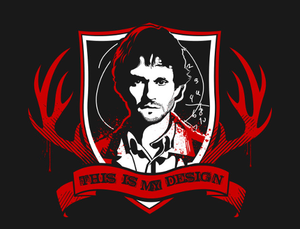This is a sequel to the last post about Britain’s relationship with the EU. That ended with the conclusion that “However, we will leave in the end, it is just a matter of time, and we will not be the only ones.”
Little did I know that the people of Britain were already there ahead of me. When the BBC’s coverage started under Britain’s leading presenter, the great David Dimbleby. It seemed that the Remain side was going to cruise home.
I thought, okay a noble fight, we made a point, but the forces of multi-national capitalism were overwhelming. So I went to bed. After all the two campaigns were not equal.
A lop sided campaign
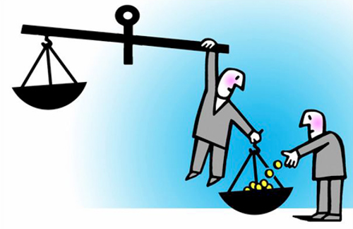The Remain side had all the forces of multi-national neo-liberal capitalism, the banks, the European Commission as well as implicit support from the supposedly independent Bank of England who popped up occasionally with helpful statistics and reports.
A lot of people do their duty as citizens and vote, but are not really interested in politics. They have enough on their plate with work and family etc. These people were always likely to do what they were told by the political leaders and also are biased towards the status quo.
The British government spent £9 million on posting a Remain booklet to every house in the UK, a benefit that the Leave side did not get. We also had the Prime Minister and the leadership of the other mainstream parties like Labour, SNP and Greens supporting Remain.
The support of the Labour leader Jeremy Corbyn was particularly difficult as the traditional left wing position in Britain is to be against the EU. The 1975 referendum, the No campaign was led by the main Labour figures of the day Michael Foot, Tony Benn and Barbara Castle.
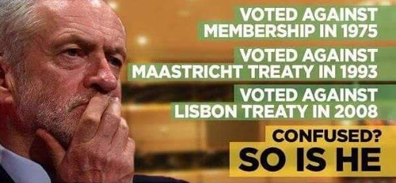Jeremy Corbyn was a well known eurosceptic but as the leader of the Labour party, whose MPs were mostly elected during the Blair years and thus are mostly right wing, he was in a bit of a difficult situation. So he did his duty as party leader and represented the party line, appearing at events all across the country for Remain.
He did however refuse to make any out and out lies, and so when cornered with a particularly forensic question, the truthful answer was not always the most politically helpful answer for the Remain side.
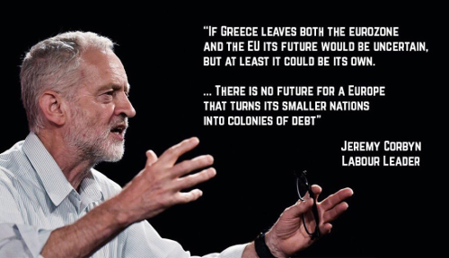The mainstream media were very pro-remain at first, especially the publicly owned TV stations like the BBC and Channel 4, but the newspapers started to drift away, even the Guardian started featuring a few pro-leave articles in the last week or so of the campaign.
Moving from one newspaper to another is a matter of moving your hands a few centimetres, so British newspapers do tend to reflect the views of their readers to a certain extent, despite the owners tending to be pro-Remain.
How to get someone out of bed
However, after a few hours of occasionally checking my phone in a sleepy haze. Something was happening. Was I dreaming it?
Area after area went for Leave. London and its little spider legs of wealth around London were going for Remain, as was Scotland, but the rest of England and Wales mostly voted for Leave.
I decided to get back out of bed, go back downstairs and wait for the Birmingham result.
Birmingham is for leave
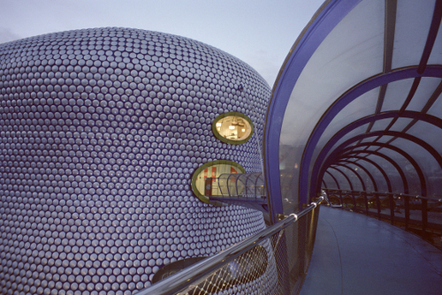Britain’s second largest city, Birmingham is not some twee ancient town like the nearby Anglo-Saxon capital of Tamworth (see last post). Birmingham is a child of the industrial revolution and the Empire (also see last post) with the major expansion of the city in the 1800s and early 1900s. Birmingham is a beautiful city, as long as you like Brutalist and Modern architecture.
Birmingham is somewhere between 45% and 50% “White British” (this weird term is the designation the government uses), it isn’t the most diverse city, which is Leicester and some the cities of the North but it is the one I live in and know best.
The different races of Birmingham mostly get on very well, the city’s signature dish is the Balti and the civic institutions put on events that reflect the city’s diverse cultural backgrounds but are open to all.
It is a Labour city. The right wing parties barely make a foothold, there is no UKIP presence to speak of. There are 9 Labour MPs and just one Tory MP in the outer suburb town of Sutton Coldfield, which doesn’t even consider itself part of Birmingham.
Birmingham with its 700,000 registered voters in the main city area, was expected to be a big remain landslide. When the result came it was 50.1% for Leave.
When you go through the posher areas of Birmingham, there were loads of Remain posters on many of the large expensive houses, so it is not mathematically possible or likely that all the votes to Leave were from “White British”. So the Black and Asian voters of Birmingham were split in the same way as the white voters, or at least enough to put Leave over the top.
The question that Remain will never answer
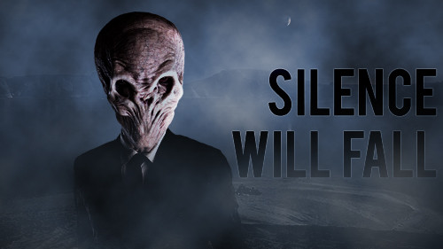I focused last post on the successful non-EU immigration that the UK has had, and a good proportion of them seem to have gone for Leave, as I thought they would. One of the questions I posed in my last post can be summed up as follows:
Why should a Bulgarian be able to bring their family to the UK and trade freely, but an immigrant from India cannot?
Despite being posed many times by Leave, this question was never answered by the Remain side. Therefore, the Black and Asian vote split and the Leave side benefited from a million or two more votes nationally, which is of course a winning difference.
Why didn’t Remain field an answer? For four reasons I think.
Little Europeans
Firstly, is the ‘little Europeans’ issue I talked about in the last post, the culture of the EU is about middle class White-European people flying about between cities on expenses. Britain has a Commonwealth history making us look at the world, a lot of Europe does not.
Those Britons most in support of Europe tend to have this identity also. The idea that people from outside the EU such as Africans or Indians are equal to Europeans, and therefore the system should reflect that, just doesn’t occur to them while hidden inside the walls of fortress Europe. We might as well be talking Klingon for all the good it does. There is just not the mental framework there to get it.
Remain also just assumed that all non-“White British” were theirs by right and they did not have to work for it. The idea that Asian or Black voters would have independent ideas and issues that should be considered did not seem to be considered by Remain.
Secondly, the Remain side I think made a tactical decision not to answer the question. They thought saying something like immigration is good, we should open our borders to the Commonwealth too, but we are not going to control EU migration at all to compensate, would push more people to the Leave side.
Top down Remain, bottom up Leave
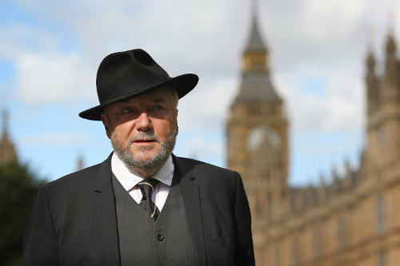Thirdly, because the Remain side inherited the infrastructure of the Labour and Tory parties, they followed a lot of top-down practices that made sense in a constituency first-past the post based system. So they sought to get a simple majority in each area, rather than focusing on total number of votes. They assumed that most Midland and Northern cities as well as Wales, would overall go for Remain so didn’t put any real effort into those areas.
Meanwhile the Leave campaign, short of financial resources, had to run a grass roots, bottom up campaign. They found out the questions putting people off Leave and had to come up with some kind of answer to the questions.
Meanwhile, several Unions like the RMT, ASLEF and BFAWU; left-wing anti-establishment figures like George Galloway and Julian Assange, as well as the socialist worker and many others, were rallying the non-mainstream media, blogs, and social networks to the Leave side.
How to brainwash yourself
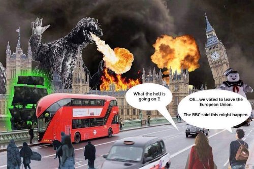The forth reason is connected to the last part, and the most important issue and this is a wider reason to why Remain lost. They believed their own propaganda, they brainwashed themselves. Believing that there were no valid reasons want Leave apart from to control immigration, they didn’t field any answers to the questions being raised.
Remain just focused on two messages:
Project Fear - leaving the EU would be the end of the world. The Chancellor George Osborne, previously featured on this blog, the one that likes to take money from disabled people and give it as tax breaks to billionaires; he made a much lampooned threat of an emergency budget requiring massive tax rises and spending cuts.
Meanwhile there was the even more preposterous argument that the UK leaving the EU would be the end of peace in Europe. I don’t even know what this means. Are Germany going to restart the blitz and rain down bombs on our heads? Is the UK going to gather an army of longbowmen and retake Agincourt? What a lot of utter nonsense.
Project Sneer - anyone who is for leaving the EU is a racist Nazi who wants to round up immigrants and throw them into the sea. Equally stupid. We will talk about this again shortly.
While immigration was an issue of course, the Leave campaign also focused on many issues that were not immigration including:
- TTIP which does actually include healthcare and results in the break up of the NHS and private health insurance from American companies
- The issue of little-Europeanism/racism we just talked about
- The fortress Europe that makes it difficult to trade with non-EU countries which are the growing part of the world.
- The lack of democracy in the European institutions. Only the Commission can introduce laws and repeal laws. The elected European Parliament can just discuss them. It has about us much power as the fantastic UK youth parliament where school children go into the house of parliament and discuss laws.
- The focus on complex regulations instead of Common Law
- The economic and social punishment given by the EU to Greece (see last post)
- Unemployment levels on the Continent.
- You could go on and on.
- The way the EU’s Thatcherite policies help distort the allocation of resources towards London and the Financial sector and away from manufacturing and wider England.
Birmingham is a traditional capital of manufacturing, and still has the productive capacity hanging on for when Britain starts depending on making and selling things, rather than relying on financial scams for its national income.
I wonder if this had a lot to do with why Wales voted Leave. The EU is keen to spend our money on museums, University buildings, and so on. But anything that might give areas like Birmingham or Wales a competitive manufacturing advantage is not allowed. Just look what happened recently to the Port Talbot Steelworks, EU regulations stopped the government from acting to save this vital national resource from Chinese steel dumping; steel is the foundation of national defence after all.
Echo chamber
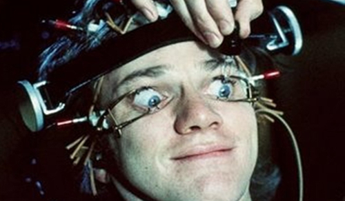The Remain side acted like an echo chamber. Its core message of sneering at everyone that is not an EU-supporting cultural liberal from Cambridge or London cost it dearly. The remain side followed its own supporters on social networks, it did not engage with the non-mainstream media of right or left, it did not go out and listen to people’s reasons for Leave and provide an appropriate response.
Therefore they lost.
Ignoring the merits of the argument for a moment, the Remain campaign, despite every possible advantage, managed to misstep at every possible moment. From Osborne’s terror budget to trying to make political capital out of the tragic death of an MP, there was not much self-awareness.
Piling on the war monger Tony Blair and everyone responsible for the 2008 crash did not improve their credibility.
Consumers in denial
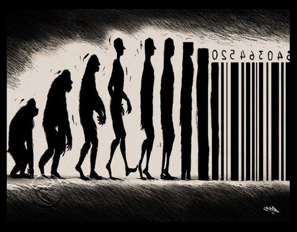When the result came, many tears were cried and much gnashing of teeth by Remain supporters.
Several days on, the vestiges of Remain support are still in full on denial. By not listening to voters in England and Wales outside London and its small tentacles into the home counties and the University cities of Oxford and Cambridge, they were totally dumbfounded that the country voted against them.
Democracy is not about ordering a policy like a pair of shoes from Amazon. You have to listen, you have to engage, you have to convince people that are not like yourself, you have to build a coalition of support.
Mocking people and blocking people on Twitter does not constitute productive debate. Calling people racists or stupid does not move them into your camp.
Second Referendum
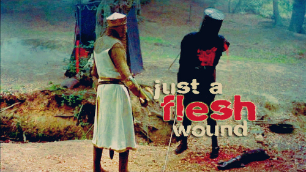The biggest joke of all is the idea of a second referendum. The people who did not and will not listen want to have another vote and keep having them until they get the result they want.
The Leave side had to wait over 40 years for a referendum. The Remain side want one tomorrow.
This will not work.
Firstly, this referendum was extremely expensive in staff costs, venue costs and lost productivity as schools and other public buildings are closed. All elections are expensive and take a long time to organise. Being based on the popular vote, it is a bit more complicated than the normal constituency system that we are geared up for. Normally there are lots of safe seats that never change and have massive winning margins that don’t really require much precision or huge amounts of staff.
Secondly, a lot of advantages the remain side had will no longer exist:
- David Cameron quit and there will be no pro-remain Prime Minister again leading the charge and offering potential promotions and knighthoods etc for those on his/her side.
- Everyone is knackered. Labour and the Unions spent all their campaign budgets and desperately need to save cash, energy and volunteers for the next set of local elections and a possible snap general election. Campaigners from other institutions like NGOs and companies need to go back to their real jobs.
- Project Fear is over, the British public already voted out and are no longer scared. Those who felt they had to ignore their heart will not need to do so again.
- Project Sneer is ineffective because anyone previously scared of talking about being out for fear of being seen as a racist or UKIP supporter, has nothing to fear as they are with the majority 52% and rising.
- Any new referendum will be from the outside. The status quo will be for remain out. The only people still for out will be a coalition of cultural liberals and dodgy bankers.
- The EU has had enough of us. When they say Britain is toxic and causes contagion, it means that other countries want the special deals we have had like vetos, partial rebate, no Schengen, no Euro. They think the sooner we nasty Island hobbits are at arms length, the longer they can keep the EU from collapsing. They are deluded of course, but that is a discussion for another post.
- Events - lots of nasty crap is coming down the pipe for Europe, it will look more unattractive as time goes on. Also other countries may leave.
- Demographics - Non-EU migrants have the highest birth rate. So as the years go on, ignoring the world outside and the issues we talked about above becomes more untenable.
- No More Patronage - the UK will now need its own systems for funding Universities, research, regional development, farming, etc. People will adapt to them and will no longer feel tied to Europe by an umbilical cord of funding.
- Progressive policies - the UK will increasingly find solutions that are not legal or tenable in the EU. Rail nationalisation, student scholarships, NHS re-nationalisation and so on. Once setup, they will act us as a permanent lock keeping us out of the EU.
If we run the referendum again, it will just be embarrassing. Leave will get 70%, or maybe much more, if we are already out then 80% or 90% I can totally believe. We need to save our fellow citizens from self-harm and mental anguish and just say no to that.
This is my design
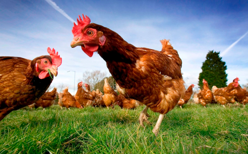I don’t deny that Leave vote had white bigots, but it also had socialists (like me) and a good amount of BME population outside London.
In any case, the past is the past, we are on the way out.
The far right bigots will get a shock when it finds that the independent UK actually increases immigration as it booms free of the EU. This time our immigration policy can be race and nationality blind, allowing the whole world to come here on an equal basis, especially the Commonwealth countries who sent 4 million of their citizens to fight and die alongside us in World War II and whom we have treated terribly since.
I love Europe, I just don’t like the centralised Roman Empire style state (see last post). I want the UK to engage with the EU countries on a bi-lateral basis, and on the level of people and companies, as a real union of peoples, not a neoliberal cage where everything has to go via a centralised Brussels bureaucracy. I also want the UK to lift its eyes and interact with the wider world.
This is our chance to do things differently. As we replace EU run areas with local ones, we can upgrade them with modern values and technology.
Our farming and fishing policies can have the greatest environmental standards in the world. We can finally ban battery chickens and give incentives for Organic food. We can stop the nonsense of paying people not to produce food and instead pay them to upgrade their animal welfare and environmental standards.
Our research policy can focus on devolving funding to the Universities themselves, trusting them to invest in long term research projects. Get the professors back in the lab and the lecturers back in the classroom, rather than making them spend all their time bidding for short-term grants.
We can return to making and not depend on the financial scams for our national income.
We can increase the minimum wage to a real living wage and thus encourage the use of automation, machines and robots (see end of last post).
The excuse in the past was that if we could not give our young people full scholarships to University, because it would be untenable to offer them to the whole EU. Now there is no excuse, we should give all young people a scholarship so they begin their careers with skills and knowledge not debt.
Boris’ Britain
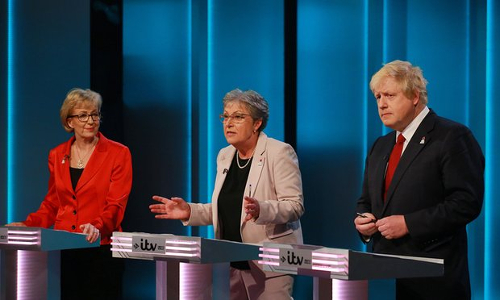Birmingham’s own Giesla Stewart was the voice of reason in this campaign and the official leader of the Leave campaign. Giesla had a good campaign and did very well. However, the mainstream media only wanted to show Boris.
I must admit Boris also had a good campaign. He didn’t make any gaffs and he looked like a leader, he stood up and took the incoming flack from Remain and effortlessly outflanked his Tory opponents by pivoting to the left when required. He seemed very comfortable and statesmanlike sharing cross-party platforms with Labour Leave figures such as Gielsa, Kate Hoey and others.
Meanwhile David Cameron refused to debate his opponents and looked like he was afraid. The remain side didn’t manage to combine the two campaigns very well.
Boris is going to win the Tory leadership, it will probably seem like a coronation, then he will try to bounce a snap election and get a strong mandate and he may win.
The left need to stop moping over the UK’s European exit and unite or Boris will get a landslide.
We can make the progressive case and win the next election. We can stop Boris’s Britain and make Britain a progressive country once again.